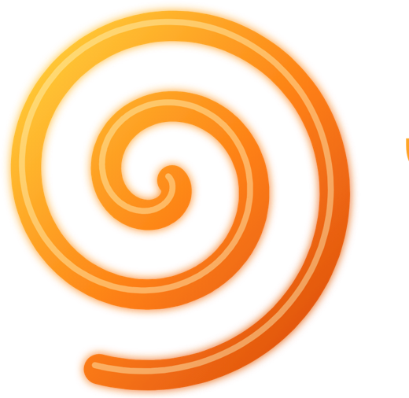
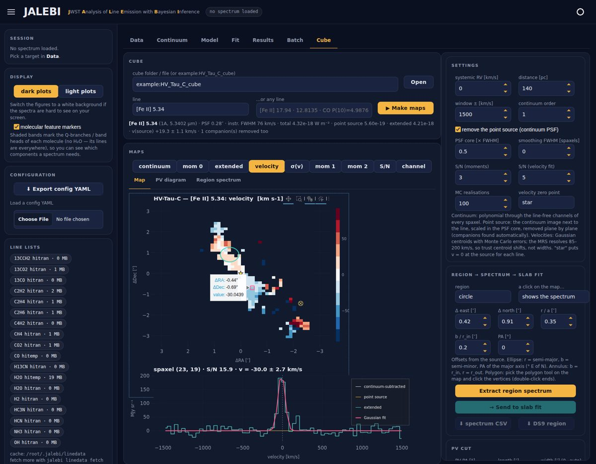

The data
One spectrum, 4.9 to 28.7 µm.
FZ Tau, a young disk observed by JWST's mid-infrared spectrograph. Every spike is a molecular line, and most bumps are bands of thousands of them.
11 637 pixels12 sub-bands

JALEBIFit every molecule in a planet-forming disk spectrum at once, and see what the data can and cannot tell you.
FZ Tau, a young disk observed by JWST's mid-infrared spectrograph. Every spike is a molecular line, and most bumps are bands of thousands of them.
JALEBI reads the pipeline's Level-3 files band by band. Each keeps its own pixels and its own line-spread function, so overlaps are fitted as observed and never stitched.
Between 13.4 and 17.6 µm the line lists hold 61 662 water transitions, with the Q-branches of C₂H₂, HCN, CO₂ and ¹³CO₂ on top.
Seven estimators, with the Q-branches protected. A model-aware pass subtracts the best-fit gas and refits the continuum through what is left. Then it is removed, leaving pure line emission.
Every candidate molecule gets LTE templates, all solved together. A molecule is kept when removing it costs ΔBIC > 10.
Each species is an LTE slab with a column density, a temperature and an emitting area. Overlapping bands compete for the same flux, so all of them are fitted at the same time.
The red line is the joint model and the trace below it is the residual. Areas are solved exactly by non-negative least squares at every step.
Differential evolution finds the optimum, then emcee samples the joint posterior. Degeneracies show up as ridges, like temperature against column density.
Cubes become line and velocity maps once the star is removed plane by plane. In HV Tau C the [Fe II] jet shows one lobe approaching and one receding.
Line fluxes become level populations for H₂, CO, OH and H₂O. HV Tau C's H₂ moves up once corrected for dust, then splits into warm and hot gas.
A cold screen against the continuum: F = Fc[1 − fc(1 − e−τ)]. On a synthetic test with known truth, JALEBI recovers it alongside the emission behind.
Everything above, in motion, with sound. Made from real JALEBI output.
One YAML config drives all three, so a fit started in the terminal opens in the web app and reruns from Python.
Prepare, detect, fit and batch whole surveys.
jalebi prep my_disk.yaml jalebi detect my_disk.yaml jalebi fit my_disk.yaml jalebi batch my_disk.yaml targets.csv
Three modules: LTE slab fit, cube maps and rotation diagrams.

Every stage is a function you can call and inspect.
from jalebi.config import ProjectConfig from jalebi.pipeline import run_pipeline cfg = ProjectConfig.load("my_disk.yaml") run = run_pipeline(cfg) print(run.mcmc.summary())
Many molecules at once, with opacity groups, isotopologue ties and radial temperature gradients.
IRSQR, median + Savitzky–Golay, ASLS, convex hull, rolling minimum, clicked anchors and line-free windows, plus model-aware refinement.
LTE templates for every candidate in one NNLS solve, judged by ΔBIC in each molecule's own windows.
Grid, differential evolution and emcee, with Laplace errors at the optimum and nested sampling for evidences.
Cold gas against the continuum with a covering fraction and its own velocity, fitted with the emission.
Point-source removal, moment and centroid-velocity maps, channel maps, PV cuts and region spectra.
H₂, CO, OH and H₂O with extinction, ortho/para ratio and curve-of-growth optical depth.
HITRAN 2020 and HITEMP for 18 molecules, with any HITRAN species downloadable.
The interactive installer checks your machine, sets up an environment and fits a synthetic disk to prove it works.
git clone https://github.com/shridharanbaskaran/jalebi cd jalebi python install.py
jalebi doctor # check the install jalebi demo # fit a synthetic disk jalebi serve --show # open the web app
If JALEBI helps your research, please cite the software, together with HITRAN/HITEMP, emcee and the methods you used.
@software{baskaran_jalebi_2026,
author = {Baskaran, Shridharan},
title = {JALEBI: JWST Analysis of Line Emission with Bayesian Inference},
version = {0.22.0},
year = {2026},
license = {BSD-3-Clause},
url = {https://github.com/shridharanbaskaran/jalebi}
}